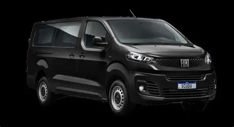

Fiat Scudo

Visão Geral
Velocidade Máxima: 208 km/h
Aceleração 0-100 km/h : 10,1 s
Potência Máxima: 182 cv a 6.000 rpm
Porta malas: 464 litros
Carga útil: 555 kg
Peso: 1508 Kg
Tanque de combustível: 70 litros
Marchas: 6
É um utilitário com leve história ligada à evolução das vans compactas, ganhando espaço entre empresas de transporte que precisam de versatilidade e economia.
Ao longo do tempo, o modelo foi reposicionado para conciliar robustez e conforto. acompanhando as demandas de mercado.
O Fiat Scudo representa uma solução prática para quem precisa de um veículo comercial leve e desempenho para cargas e trajetos variados
e um equilíbrio entre funcionalidade e conforto que torna útil para trabalho quanto para transporte ocasional de pessoas.